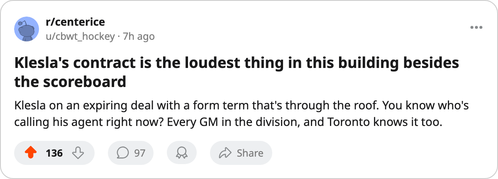

Young Guns Watch: 5 Toronto skaters sit at +7 or better on the Index, and no other club has more than 3
Chistov, Klesla, Lundmark, Nash, and Gaborik are pulling the form term north while the rest of the league manages one or two risers each
 Sam OkaforLeafs beat reporter · Queen City Telegram
Sam OkaforLeafs beat reporter · Queen City TelegramThe Bureau's Development Index carries 5  Toronto Maple Leafs players at +7 or better on the form term after 30 games.
Toronto Maple Leafs players at +7 or better on the form term after 30 games.  Marian Gaborik99 sits at +11,
Marian Gaborik99 sits at +11,  Stanislav Chistov87 and
Stanislav Chistov87 and  Rostislav Klesla87 and
Rostislav Klesla87 and  Jamie Lundmark81 at +8,
Jamie Lundmark81 at +8,  Rick Nash85 at +7. No other club has more than 3 skaters at +7 or above.
Rick Nash85 at +7. No other club has more than 3 skaters at +7 or above.
 Chicago Blackhawks has the next highest group with Igor Radulov80 at +11,
Chicago Blackhawks has the next highest group with Igor Radulov80 at +11,  Steve McCarthy81 at +8, and Ari Ahonen89 at +7.
Steve McCarthy81 at +8, and Ari Ahonen89 at +7.  Los Angeles Kings and
Los Angeles Kings and  Edmonton Oilers carry 2 each. The remaining clubs sit at 1 or 0.
Edmonton Oilers carry 2 each. The remaining clubs sit at 1 or 0.
Five players at +7 or better at the same time is the rarest signal this Index produces on a single roster.
| player | age | base | form | overall | gp | pts | mpg | salary | years |
|---|---|---|---|---|---|---|---|---|---|
| Marian Gaborik | 23 | 91 | +11 | 99 | 17 | 8 | 22.6 | $11.90M | 5 |
| Stanislav Chistov | 22 | 78 | +8 | 87 | 30 | 21 | 19.7 | $5.00M | 4 |
| Rostislav Klesla | 23 | 78 | +8 | 87 | 30 | 12 | 25.9 | $0.90M | 1 |
| Rick Nash | 21 | 77 | +7 | 85 | 30 | 18 | 15.6 | $3.90M | 4 |
| Jamie Lundmark | 24 | 74 | +8 | 81 | 22 | 3 | 6.5 | $0.80M | 2 |
The contract that changes in the spring
Klesla carries the same overall and the same form term as Chistov, but his contract reads $0.90M with 1 year remaining. He is 23 years old and averages 25.9 minutes a night with 12 points in 30 games. If the form term holds past 60 games, the market will price him before July.
Chistov, at 22, is locked: $5.00M on 4 contract years. Nash, at 21, carries $3.90M on 4 years. Lundmark is 24 with 2 years left on $0.80M. Gaborik is the outlier at $11.90M on 5 years, and he returns on 25 December after a leg injury that cost him 13 games.
The 3 players at +8 are 22, 23, and 24. Their base grades sit between 74 and 78. Their current overalls read 81 to 87. The Index says the ceiling has not been reached on any of them, and the contracts say the team still owns them cheap.
